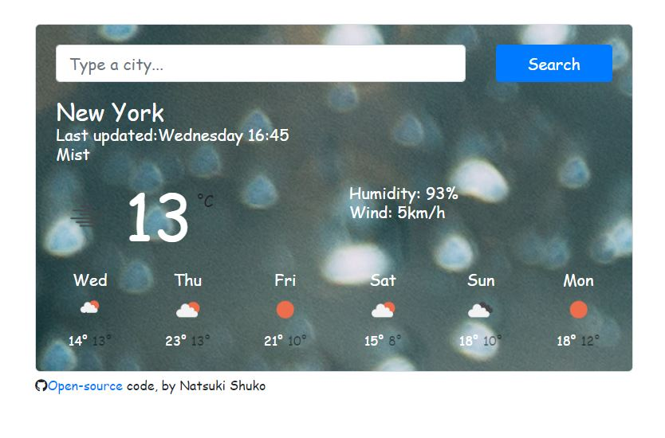

Crochet App
Crochet is a process of creating textiles by using a crochet hook to
interlock loops of yarn, thread, or strands of other materials. The
name is derived from the French term crochet, meaning
'small hook'. Hooks can be made from a variety of
materials, such as metal, wood, bamboo, or plastic. The key
difference between crochet and knitting, beyond the implements used
for their production, is that each stitch in crochet is completed
before the next one is begun, while knitting keeps many stitches
open at a time. Some variant forms of crochet, such as Tunisian
crochet and broomstick lace, do keep multiple crochet stitches open
at a time.
Weather App
Weather is the state of the atmosphere, describing for example the
degree to which it is hot or cold, wet or dry, calm or stormy, clear
or cloudy. On Earth, most weather phenomena occur in the lowest
layer of the planet's atmosphere, the troposphere, just below the
stratosphere. Weather refers to day-to-day temperature,
precipitation, and other atmospheric conditions, whereas climate is
the term for the averaging of atmospheric conditions over longer
periods of time. When used without qualification, "weather" is
generally understood to mean the weather of Earth.


Yogurt App
Yogurt is a food produced by bacterial fermentation of milk. The bacteria used to make yogurt are known as yogurt cultures. Fermentation of sugars in the milk by these bacteria produces lactic acid, which acts on milk protein to give yogurt its texture and characteristic tart flavor. Cow's milk is the milk most commonly used to make yogurt. Milk from water buffalo, goats, ewes, mares, camels, and yaks are also used to produce yogurt. The milk used may be homogenized or not. It may be pasteurized or raw. Each type of milk produces substantially different results.
More info in Wikipedia